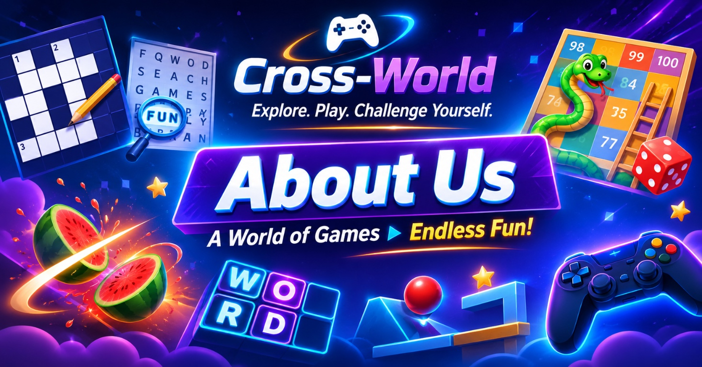

About Cross-World
A world of games. Endless ways to challenge yourself.

A World of Games. Endless Ways to Challenge Yourself.
Welcome to Cross-World, an online gaming destination created for people who enjoy exploring, thinking, solving, and playing.
Great gaming experiences do not always need complicated downloads, expensive equipment, or lengthy commitments. Sometimes, all you need is a browser, a little curiosity, and a willingness to take on a challenge.
Cross-World brings together online puzzle games, word games, brain challenges, and arcade experiences in one accessible destination. Solve a crossword, search for hidden words, navigate a physics challenge, or enjoy a classic board game.
Explore. Play. Challenge Yourself.
Our Mission
Our mission is to make casual online gaming accessible, engaging, and enjoyable. We aim to help players discover different types of games, enjoy meaningful challenges, and take a refreshing break from everyday digital routines.
From quick puzzle sessions to interactive arcade experiences, Cross-World is built around one simple idea: make play accessible and enjoyable.
What Can You Play on Cross-World?
Puzzle Games
Explore puzzles that invite logical thinking, observation, and problem-solving.
Word Games
Challenge your vocabulary, discover hidden words, and try interactive word-based experiences.
Arcade Games
Take on quick, interactive challenges and engaging gameplay in your browser.
Classic Board Games
Rediscover familiar gaming experiences and enjoy timeless board-game entertainment.
Explore Our Games
Crossword
Read clues, discover answers, and complete an online crossword challenge.
Play the Daily CrosswordWord Search
Find hidden words inside themed letter grids and test your observation skills.
Play Word SearchSnakes & Ladders
Roll the dice, climb ladders, and watch out for unexpected snakes.
Explore Snakes & LaddersSlice
Discover a quick arcade game with fruit, timing, and interactive play.
Explore SliceNeon Word Range
Try a distinctive word-game experience with clues and arcade action.
Explore Neon Word RangeGravity Shift
Experiment with gravity and approach physics-based arcade challenges.
Play Gravity ShiftClue Chaser
Interpret clues, follow the answer trails, and solve a word challenge.
Play Clue ChaserWhy Choose Cross-World?
Play Directly in Your Browser
Explore browser-based gaming without needing to install a separate desktop application.
Different Games in One Place
Discover puzzle games, word challenges, arcade experiences, and classic gaming concepts together.
Easy to Explore
Find a game that matches your interests, from thoughtful puzzles to interactive arcade experiences.
Built for Everyday Entertainment
Enjoy a quick gaming session whenever you want a refreshing break.
A Growing Gaming Collection
Cross-World continues to evolve with new game concepts, experiences, and improvements.
Our Approach to Gaming
We believe gaming can be more than passing time. A good game can encourage curiosity, offer a satisfying challenge, and create moments of enjoyment. That is why Cross-World brings together different types of gaming experiences rather than focusing on only one category.
Our goal is to keep exploring new ideas and make the platform better with every improvement.
Frequently Asked Questions
What is Cross-World?
Cross-World is an online gaming destination featuring browser-based puzzle games, word games, arcade experiences, and other casual games.
Is Cross-World free to use?
You can explore the games available on Cross-World through the website. Check individual game pages for any applicable access conditions.
Do I need to download games?
Cross-World focuses on browser-based gaming, allowing you to access supported games directly through your web browser.
Can I play Cross-World games on mobile?
You can visit Cross-World through a mobile browser. Compatibility and controls may vary depending on the individual game and device.
What types of games are available?
Cross-World features crossword puzzles, word search games, arcade challenges, physics-based games, and classic board-game experiences.
Where is Cross-World available?
Cross-World is accessible online from supported locations and compatible devices.
Does Cross-World add new games?
Cross-World is a growing gaming project, with new experiences and improvements introduced over time.
Join the Cross-World Experience
Every game offers a different challenge. Whether you enjoy puzzles, words, arcade action, or classic games, discover your next favourite experience in the Cross-World game collection.
Explore. Play. Challenge Yourself.